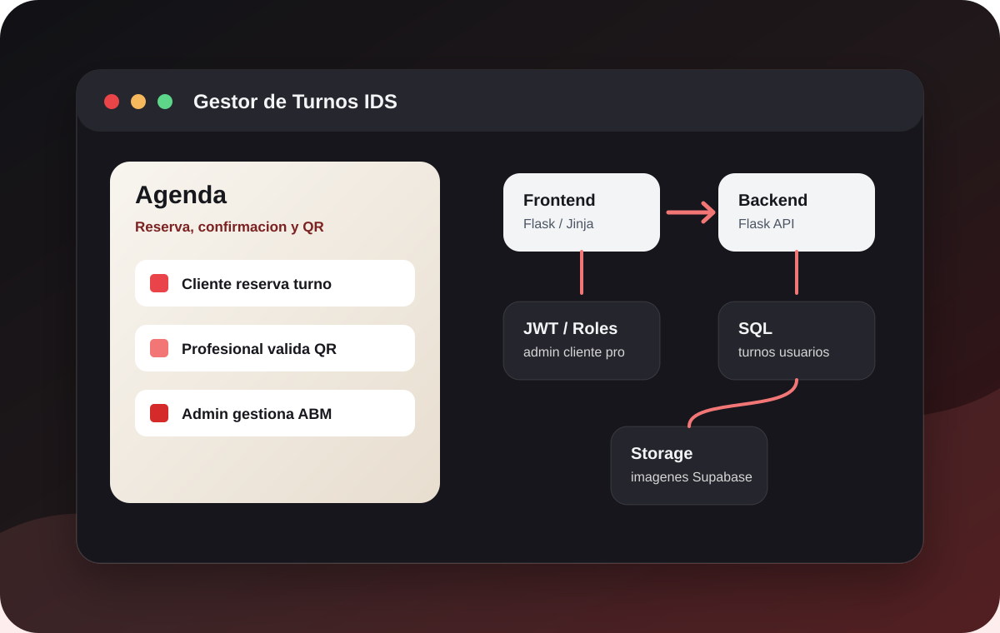
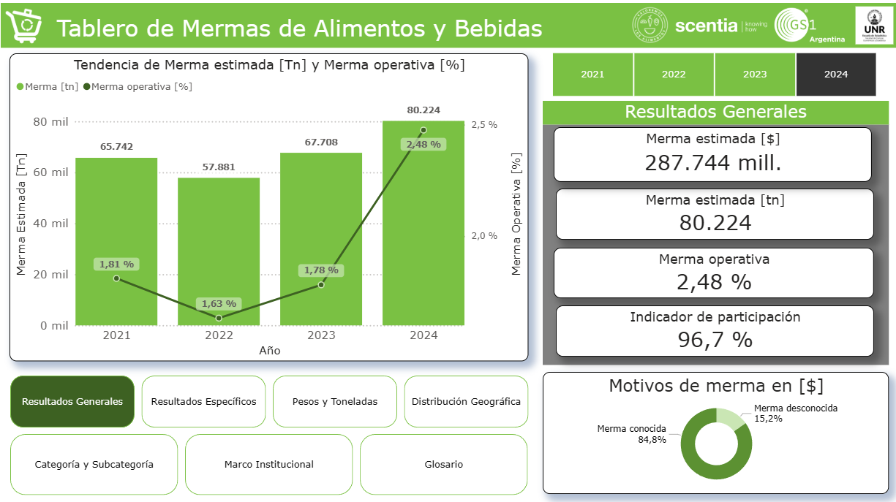
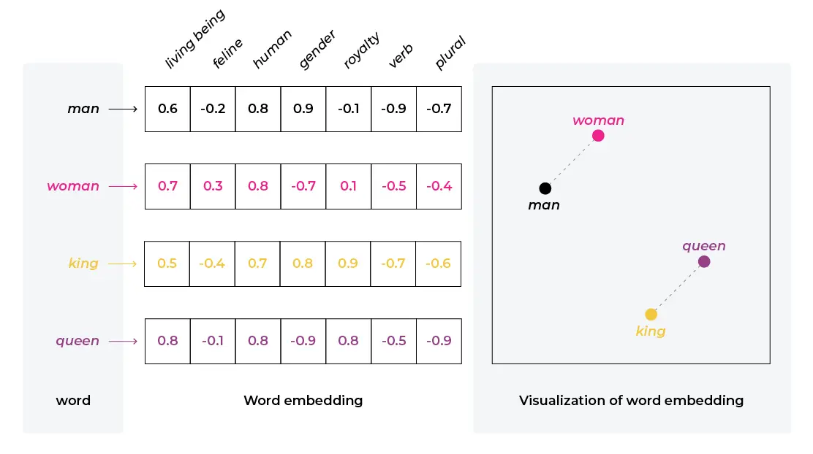
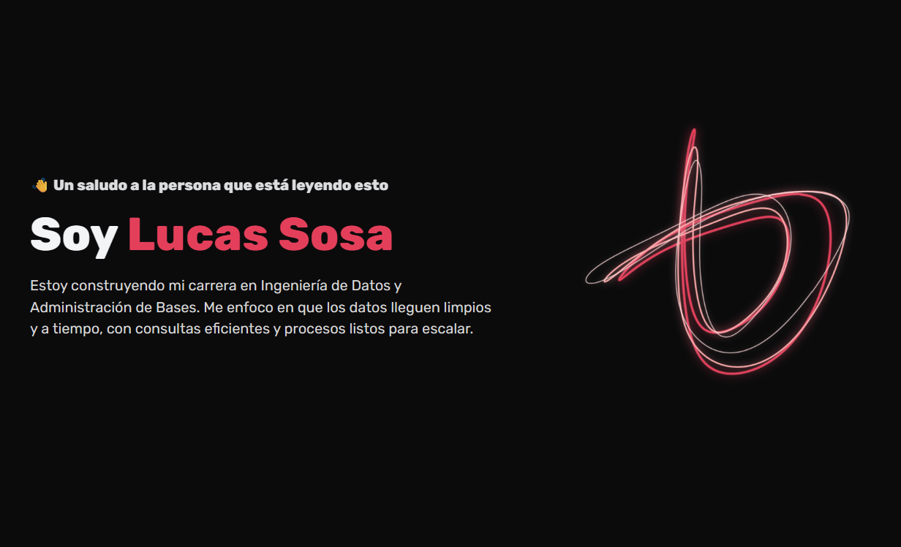
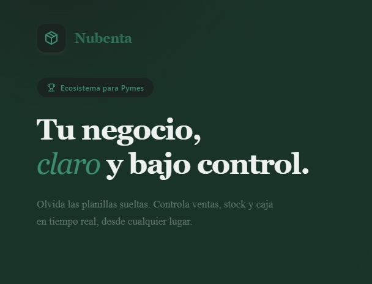
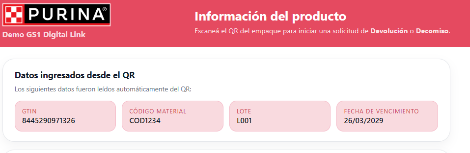

Antes de armar un dashboard, valido que lo que hay abajo sea confiable.
SQL · Python · Power BI · Automatización · IA aplicada
Convierto datos desordenados en información confiable.
Soy Lucas Sosa, Analista de Innovación y Desarrollo Jr. en GS1 Argentina. Trabajo con validación, limpieza y procesamiento de datos usando SQL, Python, Pandas y Power BI, y también construyo herramientas internas con backend, frontend, base de datos e IA aplicada cuando el proceso lo necesita.
- Calidad de datos y validaciones SQL
- Automatización con Python y Pandas
- Power BI, reportes y análisis de tendencias
- Herramientas internas con backend, frontend y base de datos
- IA aplicada a datos, documentación y desarrollo asistido
Si algo se hace a mano y se puede escribir en código, lo escribo en código.
Cuando un proceso necesita una app chica para funcionar mejor, la armo yo mismo.
Sobre mí
Soy Analista de Innovación y Desarrollo Jr. en GS1 Argentina, con foco en calidad de datos, SQL, procesamiento de información y automatización de tareas.
Trabajo validando y corrigiendo datos de productos, categorías y padrones, cruzando información en bases de datos, revisando resultados en Power BI y optimizando procesos que antes se hacían manualmente.
También aplico IA en mi flujo de trabajo para desarrollo asistido, documentación, análisis de datos y pruebas con embeddings para matching semántico. Lo que más me interesa no es un título específico, sino el cruce entre datos, código y automatización: entender un proceso real, encontrar dónde se rompe o se pierde tiempo, y resolverlo con SQL, Python o una herramienta interna cuando hace falta.
- Perfil Jr. con experiencia real en datos, aprendizaje rápido y foco en resolver problemas operativos.
- Uso diario de SQL, Python, Pandas y Power BI para revisar, limpiar y transformar información.
- Interés fuerte en Data Quality, automatización, reporting y herramientas internas más trazables.
Proyectos
Selección de proyectos donde apliqué SQL, Python, Power BI, automatización, desarrollo web e IA para resolver problemas reales o prototipar soluciones técnicas. Priorizo proyectos que muestran criterio, calidad de datos, aprendizaje rápido y capacidad para construir herramientas internas.

Proyecto destacado
Trabajo en equipo
Gestor de Turnos IDS
Full-stack · Flask · Jinja · SQL · JWT · Supabase Storage
Sistema web académico desarrollado en equipo para gestionar turnos de una barbería/peluquería, con backend y frontend separados, autenticación por roles, paneles para cliente, profesional y administrador, reservas, cancelaciones, reseñas, confirmación por mail/QR e integración con Supabase Storage para imágenes.
Frontend Flask/Jinja
Backend Flask API
SQL
JWT/Auth
Supabase Storage
Ver arquitectura y aprendizajes
Qué resolvía
Un flujo real de turnos: elegir servicio y profesional, reservar, confirmar, cancelar y separar permisos por rol.
Qué aprendí
Consolidé una aplicación web de punta a punta, separando responsabilidades entre backend, frontend, base de datos, autenticación, permisos, vistas y flujos de usuario.
- Modelado inicial y roles.
- Separación backend/frontend.
- Autenticación, sesiones y vistas privadas.
- ABM admin, turnos, QR y confirmaciones.
- Storage de imágenes y documentación progresiva.

Data Quality
BI
Producción
VLA · Mermas retail
Python · SQL · Pandas · Power BI
Problema: procesar y validar información de productos/mermas para generar reportes confiables y detectar inconsistencias operativas.
Solución: automaticé parte del flujo de ingesta y transformación con Python/Pandas, cruces de tablas y correcciones SQL.
Resultado: reduje tareas manuales que podían llevar días a un flujo ejecutable en aproximadamente una hora.
Aprendizaje
Aprendí que un buen dashboard depende primero de datos confiables: validación, trazabilidad y control de errores pesan tanto como la visualización final.
Ver más
Foco técnico
Calidad de datos, automatización de procesos manuales, SQL para correcciones y Power BI para revisar tendencias.
Impacto
Mayor trazabilidad para analizar mermas y menos dependencia de tareas repetitivas de preparación.

IA aplicada
NLP
Experimento
Matching GPC ↔ CPC
Python · Embeddings · Hugging Face · FAISS
Problema: comparar taxonomías con descripciones distintas para encontrar posibles equivalencias semánticas.
Solución: vectoricé categorías CPC y GPC usando embeddings, modelos de Hugging Face y búsqueda por similitud.
Resultado: detecté candidatos de coincidencia y entendí cómo evaluar IA en un problema real de negocio.
Aprendizaje
Aprendí que aplicar IA no es solo correr un modelo: hay que medir precisión, revisar falsos positivos, ajustar criterios y validar con conocimiento funcional.
Ver más
Exploración
Vectorización, similitud semántica, evaluación de resultados y comparación entre candidatos.
Limitación
La precisión inicial fue limitada, pero sirvió para entender errores y definir mejores criterios de validación.

Marca profesional
Frontend
UX
Portfolio personal
HTML · CSS · JavaScript · Responsive · Accesibilidad
Problema: necesitaba presentar mi perfil, proyectos, aprendizajes y foco profesional para recruiters.
Solución: construí un sitio responsive con filtros, modo claro/oscuro, navegación mobile y lectura rápida.
Resultado: una base mantenible para mostrar evolución profesional y proyectos técnicos.
Aprendizaje
Aprendí a convertir experiencia técnica dispersa en una narrativa profesional clara, cuidando diseño, accesibilidad, performance y comunicación.
Ver más
Interfaz
Diseño responsive, filtros de proyectos/cursos, modo claro/oscuro y navegación mobile.
Narrativa
Storytelling profesional para conectar datos, automatización, IA y herramientas internas.

Producto propio
Web App
En desarrollo
Nubenta · POS
React · SQLAlchemy · Render · GitHub
Problema: diseñar una solución para comercios que gestione ventas, inventario, caja y operación diaria.
Solución: trabajo en una app tipo POS con frontend web, backend desplegado, persistencia y decisiones de producto en equipo.
Resultado: funciona como laboratorio de producto real: arquitectura, UX, despliegue y evolución incremental.
Aprendizaje
Estoy aprendiendo a pensar más allá del código: alcance, prioridades, deuda técnica, estados de negocio y coordinación con otra persona.
Ver más
Producto
Gestión de ventas, inventario, caja y experiencia de uso para comercios chicos.
Proceso
Deploy, decisiones de arquitectura, colaboración técnica y mejora gradual del producto.

Demo técnica
Prototipado
GS1
Demo GS1 QR Code
HTML · CSS · JavaScript · GS1 Digital Link
Problema: validar rápidamente cómo visualizar información codificada en un GS1 QR Code / Digital Link.
Solución: construí una demo frontend que interpreta GTIN, lote, vencimiento y código de material desde la URL.
Resultado: la demo permitió comunicar una idea técnica y probar el flujo sin construir un sistema completo.
Aprendizaje
Aprendí el valor de un prototipo rápido: cuando una idea es difícil de explicar, una demo simple acelera la validación.
Ver más
Flujo
Interpretación de atributos GS1 Digital Link y presentación visual de datos codificados.
Uso
Demo para comunicación interna, validación rápida y conversación técnica.
Web institucional
Equipo
Cliente real
Proyecto Rojas · Web
HTML · CSS · JavaScript · Responsive
Problema: crear una presencia web simple y clara para un consultorio odontológico.
Solución: desarrollamos en equipo un sitio responsive con secciones institucionales y contenido ordenado.
Resultado: fue un primer acercamiento a construir para un cliente e interpretar necesidades reales.
Aprendizaje
Aprendí que desarrollar para otros implica escuchar, simplificar, priorizar y adaptar la solución a una necesidad concreta.
Ver más
Trabajo
Sitio responsive, comunicación con cliente, contenido institucional y colaboración.
Evolución
Primer producto web pensado para usuarios reales, con foco en claridad y necesidad concreta.
Skills
Herramientas y tecnologías que uso según el tipo de problema: datos, bases de datos, automatización, aplicaciones internas, prototipos web e IA aplicada.
Datos / BI
Procesamiento, validación, análisis y visualización de datos.
Base de datos
Consultas, cruces, validaciones, limpieza, correcciones y modelado relacional básico.
Backend / Automatización
Scripts, procesos internos, integraciones, APIs y prototipos técnicos.
IA aplicada / Herramientas
Uso IA para acelerar análisis, documentación, desarrollo asistido y experimentos de matching.
ChatGPT
 Claude
Codex
Claude
Codex
 Hugging Face
Hugging Face
Frontend / Prototipado
Interfaces simples para demos, pruebas de concepto y comunicación técnica.
Dev tools / Deploy
Versionado, despliegue y herramientas de trabajo técnico.
GitHub
 Render
Render
Storage / Integraciones
Conexión de aplicaciones con servicios externos y assets operativos.
Supabase Storage
 QR
QR
Cursos
IA para programadores
En cursoFundamentos prácticos de ML para devs.
Power BI
En cursoModelado de datos, DAX y visualización de dashboards interactivos.
Programación orientada a objetos con IA
AprobadoPOO en C# (.NET) usando IA como herrramienta principal para el desarrollo.
SQL Server Programming
AprobadoProgramación avanzada, optimización de consultas y stored procedures en SQL Server.
Desarrollo Web con HTML
AprobadoMaquetado semántico y buenas prácticas.
Introducción a Bases de Datos y SQL
AprobadoConsultas, CTEs y fundamentos relacionales.
Javascript desde cero
AprobadoFundamentos del lenguaje y DOM básico.
C# para no programadores
AprobadoSintaxis, tipos y OOP introductorio.
Fundamentos de Base de Datos (Avanzado)
AprobadoProfundización en modelado y performance.
Líderes recreativos comunitarios
AprobadoPrograma de 3 años. Trabajo en equipo, coordinación y comunicación.
Sin certificado digital
Storytelling
En cursoNarrativas para presentar ideas y resultados.